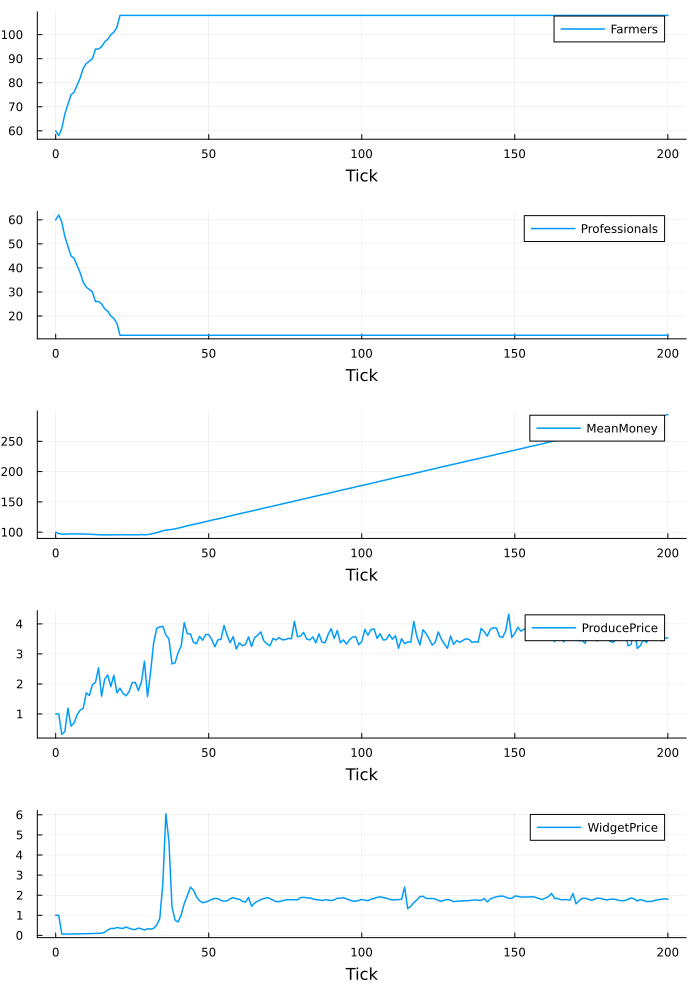
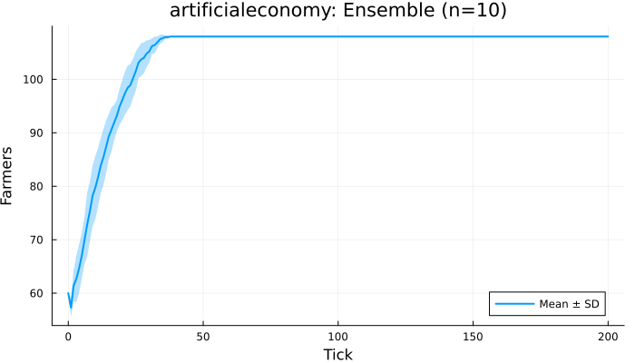
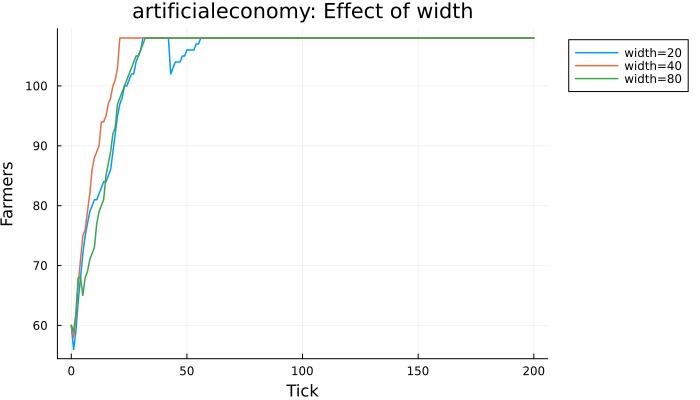

Artificial Economy
Overview
This vignette demonstrates the Artificial Economy model implemented in ArkModelZoo.jl using the Ark.jl ECS framework.
Parameters
| Parameter | Type | Default | Description |
|---|---|---|---|
width | Int | 40 | width |
height | Int | 40 | height |
population | Int | 60 | per role (60 farmers + 60 professionals) |
fuel_grow_rate | Float64 | 0.01 | production rate for farmers |
productivity_farmerworld | Float64 | 10.0 | farm production multiplier |
productivity_cityworld | Float64 | 200.0 | widget production multiplier |
depreciation | Float64 | 0.01 | goods decay rate per tick |
produce_supply_level | Float64 | 2000.0 | target produce supply (price formula) |
widget_supply_level | Float64 | 600.0 | target widget supply (price formula) |
markup | Float64 | 10.0 | price markup percentage |
initial_money | Float64 | 100.0 | initial money |
interest_rate | Float64 | 0.05 | bank interest rate on loans |
max_debt | Float64 | 500.0 | bankruptcy threshold |
switch_probability | Float64 | 0.05 | prob of considering role switch per tick |
max_ticks | Int | 200 | max ticks |
Source Code
The Julia code to run this model:
using ArkModelZoo
_, trajectory = run_artificialeconomy()Time Series

Ensemble Runs
Ten replicates with different random seeds, showing mean ± standard deviation.

Parameter Sensitivity
Varying width.

Appendix: Source Code
This model is implemented in the Ark.jl Entity-Component-System (ECS) framework. The code is split into five files, each with a distinct role:
- Parameters: a mutable struct holding all configurable values.
- Components: lightweight data types attached to individual entities (agents).
- Resources: world-level shared state accessible to all systems.
- Systems: functions that operate on entities each tick, defining model behavior.
- Model: wiring that assembles the world, registers resources and systems, and provides the run entry point.
Parameters (parameters.jl)
The parameter struct uses @kwdef so that every field has a default value and can be overridden by keyword. These defaults match the original NetLogo model’s slider settings.
Base.@kwdef mutable struct AEconParams
width::Int = 40
height::Int = 40
population::Int = 60 # per role (60 farmers + 60 professionals)
fuel_grow_rate::Float64 = 0.01 # production rate for farmers
productivity_farmerworld::Float64 = 10.0 # farm production multiplier
productivity_cityworld::Float64 = 200.0 # widget production multiplier
depreciation::Float64 = 0.01 # goods decay rate per tick
produce_supply_level::Float64 = 2000.0 # target produce supply (price formula)
widget_supply_level::Float64 = 600.0 # target widget supply (price formula)
markup::Float64 = 10.0 # price markup percentage
initial_money::Float64 = 100.0
interest_rate::Float64 = 0.05 # bank interest rate on loans
max_debt::Float64 = 500.0 # bankruptcy threshold
switch_probability::Float64 = 0.05 # prob of considering role switch per tick
max_ticks::Int = 200
seed::Int = 42
endComponents (components.jl)
Components are lightweight data types attached to individual entities (agents). Mutable structs hold per-entity state, while empty tag structs act as markers for the ECS query system to efficiently filter entities.
struct AEconDummy endResources (resources.jl)
Resources are world-level singletons shared across all systems, used for global state and aggregate statistics.
mutable struct AEconState
n_agents::Int
is_farmer::Vector{Bool}
x::Vector{Int}
y::Vector{Int}
money::Vector{Float64}
produce::Vector{Float64}
widget::Vector{Float64}
debt::Vector{Float64}
alive::Vector{Bool}
last_income::Vector{Float64}
# Store state
store_produce::Float64
store_widget::Float64
store_money::Float64
# Prices
produce_price::Float64
widget_price::Float64
# Bank state
farmer_bank_capital::Float64
professional_bank_capital::Float64
farmer_interest_rate::Float64
professional_interest_rate::Float64
# Trade tracking for price setting
total_produce_traded::Float64
total_widget_traded::Float64
# Grid
width::Int
height::Int
farm_yield::Matrix{Float64}
end
mutable struct AEconStats
n_farmers::Int
n_professionals::Int
mean_money::Float64
produce_price::Float64
widget_price::Float64
end
AEconStats() = AEconStats(0, 0, 0.0, 0.0, 0.0)Systems (systems.jl)
Systems contain the model logic and execute in a defined order each tick. Each system struct implements either initialize! (run once at setup) or update! (run every tick).
# --- Initialization ---
struct InitAEconSystem <: System end
function initialize!(::InitAEconSystem, world::World)
state = get_resource(world, AEconState)
stats = get_resource(world, AEconStats)
n_f = 0
n_p = 0
total_money = 0.0
for i in 1:state.n_agents
total_money += state.money[i]
if state.is_farmer[i]
n_f += 1
else
n_p += 1
end
end
stats.n_farmers = n_f
stats.n_professionals = n_p
stats.mean_money = total_money / state.n_agents
stats.produce_price = state.produce_price
stats.widget_price = state.widget_price
return nothing
end
# --- Move + Produce ---
struct AEconMoveProduceSystem <: System end
function update!(::AEconMoveProduceSystem, world::World)
params = get_resource(world, AEconParams)
rng = get_resource(world, RNGResource).rng
state = get_resource(world, AEconState)
w, h = state.width, state.height
half_w = div(w, 2)
for i in 1:state.n_agents
!state.alive[i] && continue
dx = rand(rng, -1:1)
dy = rand(rng, -1:1)
nx = state.x[i] + dx
ny = state.y[i] + dy
if state.is_farmer[i]
state.x[i] = clamp(nx, 1, half_w)
state.y[i] = clamp(ny, 1, h)
px, py = state.x[i], state.y[i]
state.produce[i] += state.farm_yield[px, py] * params.fuel_grow_rate * params.productivity_farmerworld
else
state.x[i] = clamp(nx, half_w + 1, w)
state.y[i] = clamp(ny, 1, h)
if state.produce[i] > 0.0
convert_amount = min(state.produce[i], 5.0)
state.widget[i] += convert_amount * params.productivity_cityworld / 100.0
state.produce[i] -= convert_amount
end
end
state.produce[i] *= (1.0 - params.depreciation)
state.widget[i] *= (1.0 - params.depreciation)
end
return nothing
end
# --- Price Setting ---
struct AEconPriceSystem <: System end
function update!(::AEconPriceSystem, world::World)
params = get_resource(world, AEconParams)
state = get_resource(world, AEconState)
state.produce_price = (params.produce_supply_level / max(state.total_produce_traded, 0.01)) * params.markup / 100.0
state.widget_price = (params.widget_supply_level / max(state.total_widget_traded, 0.01)) * params.markup / 100.0
state.produce_price = clamp(state.produce_price, 0.01, 100.0)
state.widget_price = clamp(state.widget_price, 0.01, 100.0)
return nothing
end
# --- Trade ---
struct AEconTradeSystem <: System end
function update!(::AEconTradeSystem, world::World)
rng = get_resource(world, RNGResource).rng
state = get_resource(world, AEconState)
total_produce_traded = 0.0
total_widget_traded = 0.0
order = collect(1:state.n_agents)
Random.shuffle!(rng, order)
for i in order
!state.alive[i] && continue
old_money = state.money[i]
if state.is_farmer[i]
# Sell produce
sell_amount = min(state.produce[i], 20.0)
if sell_amount > 0.0
revenue = sell_amount * state.produce_price
state.money[i] += revenue
state.produce[i] -= sell_amount
state.store_produce += sell_amount
state.store_money -= revenue
total_produce_traded += sell_amount
end
# Buy widgets
if state.money[i] > 0.0 && state.store_widget > 0.0
affordable = state.money[i] / max(state.widget_price, 0.01)
buy_amount = min(affordable, state.store_widget, 5.0)
if buy_amount > 0.0
cost = buy_amount * state.widget_price
state.money[i] -= cost
state.widget[i] += buy_amount
state.store_widget -= buy_amount
state.store_money += cost
total_widget_traded += buy_amount
end
end
else
# Sell widgets
sell_amount = min(state.widget[i], 10.0)
if sell_amount > 0.0
revenue = sell_amount * state.widget_price
state.money[i] += revenue
state.widget[i] -= sell_amount
state.store_widget += sell_amount
state.store_money -= revenue
total_widget_traded += sell_amount
end
# Buy produce
if state.money[i] > 0.0 && state.store_produce > 0.0
affordable = state.money[i] / max(state.produce_price, 0.01)
buy_amount = min(affordable, state.store_produce, 10.0)
if buy_amount > 0.0
cost = buy_amount * state.produce_price
state.money[i] -= cost
state.produce[i] += buy_amount
state.store_produce -= buy_amount
state.store_money += cost
total_produce_traded += buy_amount
end
end
end
state.last_income[i] = state.money[i] - old_money
end
state.total_produce_traded = max(total_produce_traded, 0.01)
state.total_widget_traded = max(total_widget_traded, 0.01)
return nothing
end
# --- Finance (borrow, repay, interest, bankruptcy) ---
struct AEconFinanceSystem <: System end
function update!(::AEconFinanceSystem, world::World)
params = get_resource(world, AEconParams)
rng = get_resource(world, RNGResource).rng
state = get_resource(world, AEconState)
half_w = div(state.width, 2)
for i in 1:state.n_agents
!state.alive[i] && continue
# Emergency borrowing
if state.money[i] < 0.0
borrow_amount = abs(state.money[i])
state.debt[i] += borrow_amount
state.money[i] = 0.0
if state.is_farmer[i]
state.farmer_bank_capital -= borrow_amount
else
state.professional_bank_capital -= borrow_amount
end
end
# Repay
if state.money[i] > 0.0 && state.debt[i] > 0.0
repay_amount = min(state.money[i] * 0.5, state.debt[i])
state.money[i] -= repay_amount
state.debt[i] -= repay_amount
if state.is_farmer[i]
state.farmer_bank_capital += repay_amount
else
state.professional_bank_capital += repay_amount
end
end
# Compound interest
rate = state.is_farmer[i] ? state.farmer_interest_rate : state.professional_interest_rate
state.debt[i] *= (1.0 + rate)
# Bankruptcy
if state.debt[i] > params.max_debt
state.money[i] = params.initial_money
state.debt[i] = 0.0
state.produce[i] = 0.0
state.widget[i] = 0.0
if state.is_farmer[i]
state.x[i] = rand(rng, 1:half_w)
else
state.x[i] = rand(rng, (half_w + 1):state.width)
end
state.y[i] = rand(rng, 1:state.height)
end
end
return nothing
end
# --- Role Switching ---
struct AEconSwitchSystem <: System end
function update!(::AEconSwitchSystem, world::World)
params = get_resource(world, AEconParams)
rng = get_resource(world, RNGResource).rng
state = get_resource(world, AEconState)
farmer_income_sum = 0.0
farmer_count = 0
prof_income_sum = 0.0
prof_count = 0
for i in 1:state.n_agents
!state.alive[i] && continue
if state.is_farmer[i]
farmer_income_sum += state.last_income[i]
farmer_count += 1
else
prof_income_sum += state.last_income[i]
prof_count += 1
end
end
avg_farmer = farmer_count > 0 ? farmer_income_sum / farmer_count : 0.0
avg_prof = prof_count > 0 ? prof_income_sum / prof_count : 0.0
half_w = div(state.width, 2)
min_per_role = max(5, div(state.n_agents, 10))
# Only allow switching when both roles have enough agents for meaningful data
(farmer_count < min_per_role || prof_count < min_per_role) && return nothing
for i in 1:state.n_agents
!state.alive[i] && continue
rand(rng) >= params.switch_probability && continue
if state.is_farmer[i] && avg_prof > avg_farmer * 1.2 && farmer_count > min_per_role
state.is_farmer[i] = false
state.x[i] = rand(rng, (half_w + 1):state.width)
state.produce[i] = 0.0
farmer_count -= 1
prof_count += 1
elseif !state.is_farmer[i] && avg_farmer > avg_prof * 1.2 && prof_count > min_per_role
state.is_farmer[i] = true
state.x[i] = rand(rng, 1:half_w)
state.widget[i] = 0.0
prof_count -= 1
farmer_count += 1
end
end
return nothing
end
# --- Stats ---
struct AEconStatsSystem <: System end
function update!(::AEconStatsSystem, world::World)
state = get_resource(world, AEconState)
stats = get_resource(world, AEconStats)
n_f = 0
n_p = 0
total_money = 0.0
alive_count = 0
for i in 1:state.n_agents
!state.alive[i] && continue
alive_count += 1
total_money += state.money[i]
if state.is_farmer[i]
n_f += 1
else
n_p += 1
end
end
stats.n_farmers = n_f
stats.n_professionals = n_p
stats.mean_money = alive_count > 0 ? total_money / alive_count : 0.0
stats.produce_price = state.produce_price
stats.widget_price = state.widget_price
return nothing
end
# --- Termination ---
struct AEconTerminationSystem <: System end
function update!(::AEconTerminationSystem, world::World)
params = get_resource(world, AEconParams)
tick = get_resource(world, Tick)
if tick.tick + 1 >= params.max_ticks
get_resource(world, Terminate).stop = true
end
return nothing
endModel (model.jl)
The model file assembles all pieces: it creates the ECS World with the required component types, registers resources, builds the Scheduler with systems in execution order, and exposes the public run entry point. The observer pattern records the trajectory each tick.
function _build_aecon_state(params::AEconParams, rng)
n = 2 * params.population
w, h = params.width, params.height
farm_yield = zeros(Float64, w, h)
half_w = div(w, 2)
for x in 1:half_w, y in 1:h
farm_yield[x, y] = Float64(rand(rng, 0:9))
end
state = AEconState(
n,
vcat(fill(true, params.population), fill(false, params.population)),
zeros(Int, n), zeros(Int, n),
fill(params.initial_money, n),
zeros(Float64, n), zeros(Float64, n),
zeros(Float64, n),
fill(true, n),
zeros(Float64, n),
1000.0, 500.0, 5000.0,
1.0, 1.0,
5000.0, 5000.0,
params.interest_rate, params.interest_rate,
200.0, 60.0,
w, h, farm_yield,
)
for i in 1:n
if state.is_farmer[i]
state.x[i] = rand(rng, 1:half_w)
else
state.x[i] = rand(rng, (half_w + 1):w)
state.produce[i] = 20.0 # initial produce for professionals
end
state.y[i] = rand(rng, 1:h)
end
return state
end
function artificialeconomy_world(; initial_capacity::Int = 128)
return World(AEconDummy; initial_capacity = initial_capacity, allow_mutable = true)
end
function artificialeconomy_systems()
return (
InitAEconSystem(),
AEconMoveProduceSystem(),
AEconPriceSystem(),
AEconTradeSystem(),
AEconFinanceSystem(),
AEconSwitchSystem(),
AEconStatsSystem(),
AEconTerminationSystem(),
)
end
function artificialeconomy_model(params::AEconParams = AEconParams())
world = artificialeconomy_world()
rng_resource = RNGResource(Xoshiro(params.seed))
add_resource!(world, Tick(0))
add_resource!(world, Terminate(false))
add_resource!(world, rng_resource)
add_resource!(world, deepcopy(params))
add_resource!(world, _build_aecon_state(params, rng_resource.rng))
add_resource!(world, AEconStats())
scheduler = Scheduler(world, artificialeconomy_systems())
initialize!(scheduler)
return scheduler
end
struct AEconObserver end
function aecon_headers(::AEconObserver)
return ["Farmers", "Professionals", "MeanMoney", "ProducePrice", "WidgetPrice"]
end
function aecon_values(::AEconObserver, world::World)
stats = get_resource(world, AEconStats)
return Float64[stats.n_farmers, stats.n_professionals, stats.mean_money,
stats.produce_price, stats.widget_price]
end
function run_artificialeconomy(; params::AEconParams = AEconParams(), observe::Bool = true)
return _run_model(artificialeconomy_model, AEconObserver(), aecon_values; params, observe)
end